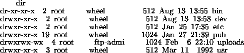
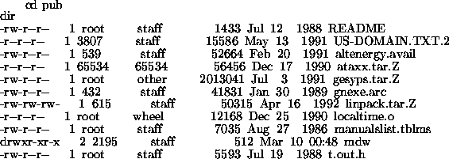

The File Transfer Protocol (FTP) is the set of programs used for transferring files between systems on the Internet. Most Unix, VMS, and MS-DOS systems on the Internet have a program called ftp which you use to transfer these files, and if you have Internet access, the best way to download the Linux software is by using ftp. This appendix covers basic ftp usage--of course, there are many more functions and uses of ftp than are given here.
At the end of this appendix there is a listing of FTP sites where Linux software can be found. Also, if you don't have direct Internet access but are able to exchange electronic mail with the Internet, information on using the ftpmail service is included below.
If you're using an MS-DOS, Unix, or VMS system to download files from the Internet, then ftp is a command-driven program. However, there are other implementations of ftp out there, such as the Macintosh version (called Fetch) with a nice menu-driven interface, which is quite self-explanatory. Even if you're not using the command-driven version of ftp, the information given here should help.
ftp can be used to both upload (send) or download (receive) files from other Internet sites. In most situations, you're going to be downloading software. On the Internet there are a large number of publicly-available FTP archive sites, machines which allow anyone to ftp to them and download free software. One such archive site is sunsite.unc.edu, which has a lot of Sun Microsystems software, and acts as one of the main Linux sites. In addition, FTP archive sites mirror software to each other--that is, software uploaded to one site will be automatically copied over to a number of other sites. So don't be surprised if you see the exact same files on many different archive sites.
Note that in the example ``screens'' printed below I'm only showing the most important information, and what you see may differ. Also, commands in italics represent commands that you type; everything else is screen output.
To start ftp and connect to a site, simply use the command
where hostname is the name of the
site you are connecting to.
For example, to connect to the mythical site
shoop.vpizza.com we can use the command
When ftp starts up we should see something like
Here, ftp is asking us to give the username that we want to login as
on shoop.vpizza.com. The default here is mdw, which is my username
on the system I'm using FTP from. Since I don't have an account on
shoop.vpizza.com I can't login as myself. Instead, to access
publicly-available software on an FTP site you login as anonymous, and
give your Internet e-mail address (if you have one) as the password.
So, we would type
Of course, you should give your e-mail address, instead of mine, and it
won't echo to the screen as you're typing it (since it's technically a
``password''). ftp should allow us to login and we'll be ready to
download software.
Okay, we're in. ftp> is our prompt, and the ftp program is
waiting for commands. There are a few basic commands you need to know about.
First, the commands
and
both give file listings (where file
is an optional argument
specifying a particular file name to list). The difference is that ls
usually gives a short listing and dir gives a longer listing (that
is, with more information on the sizes of the files, dates of modification,
and so on).
The command
will move to the given directory (just like the cd command on Unix or
MS-DOS systems). You can use the command
to change to the parent directory .
.
The command
will give help on the given ftp command
(such as ls or
cd). If no command is specified, ftp will list all of the
available commands.
If we type dir at this point we'll see an initial directory
listing of where we are.

Each of these entries is a directory, not an individual file which we can download (specified by the d in the first column of the listing). On most FTP archive sites, the publicly available software is under the directory /pub, so let's go there.

Here we can see a number of (interesting?) files, one of which is called README, which we should download (most FTP sites have a README file in the /pub directory).
Before downloading files, there are a few things that you need to take care of.
To turn on hash mark printing, give the command hash.
Why does the file type matter? Only because on some systems (such as MS-DOS systems), certain characters in a text file, such as carriage returns, need to be converted so that the file will be readable. While transferring in binary mode, no conversion is done--the file is simply transferred byte after byte.
The commands bin and ascii set the transfer mode to binary and text, respectively. When in doubt, always use binary mode to transfer files. If you try to transfer a binary file in text mode, you'll corrupt the file and it will be unusable. (This is one of the most common mistakes made when using FTP.) However, you can use text mode for plain text files (whose file names often end in .txt).
For our example, we're downloading the file README, which is
most likely a text file, so we use the command
For example, to set the local directory to /home/db/mdw/tmp, use
the command
Now you're ready to actually download the file. The command
is used for this, where remote-name
is the name of the
file on the remote machine, and local-name
is the name
that you wish to give the file on your local machine. The
local-name argument is optional; by default,
the local file name is
the same as the remote one. However, if for example you're downloading
the file README, and you already have a README in your local
directory, you'll want to give a different
local-filename
so that
the first one isn't overwritten.
For our example, to download the file README, we simply use
To end your FTP session, simply use the command
The command
can be used to close the connection with the current remote FTP site;
the open command can then be used to start a session with another
site (without quitting the FTP program altogether).
ftpmail is a service which allows you to obtain files from FTP archive sites via Internet electronic mail. If you don't have direct Internet access, but are able to send mail to the Internet (from a service such as CompuServe, for example), ftpmail is a good way to get files from FTP archive sites. Unfortunately, ftpmail can be slow, especially when sending large jobs. Before attempting to download large amounts of software using ftpmail, be sure that your mail spool will be able to handle the incoming traffic. Many systems keep quotas on incoming electronic mail, and may delete your account if your mail exceeds this quota. Just use common sense.
sunsite.unc.edu, one of the major Linux FTP archive sites,
is home to an ftpmail server. To use this service, send
electronic mail to
with a message body containing only the word:
This will send you back a list of ftpmail commands and a brief
tutorial on using the system.
For example, to get a listing of Linux
files found on sunsite.unc.edu, send mail to the above address
containing the text
You may use the ftpmail service to connect to any FTP archive site; you are not limited to sunsite.unc.edu. The next section lists a number of Linux FTP archives.
The table on page  is a listing of the most
well-known FTP archive sites which carry the Linux software. Keep in
mind that many other sites mirror these, and more than likely you'll
run into Linux on a number of sites not on this list.
is a listing of the most
well-known FTP archive sites which carry the Linux software. Keep in
mind that many other sites mirror these, and more than likely you'll
run into Linux on a number of sites not on this list.
tsx-11.mit.edu, sunsite.unc.edu, and nic.funet.fi are the ``home sites'' for the Linux software, where most of the new software is uploaded. Most of the other sites on the list mirror some combination of these three. To reduce network traffic, choose a site that is geographically closest to you.